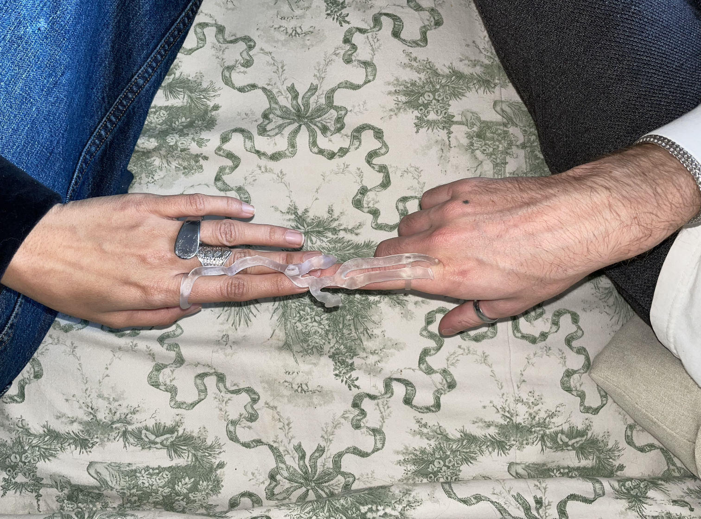
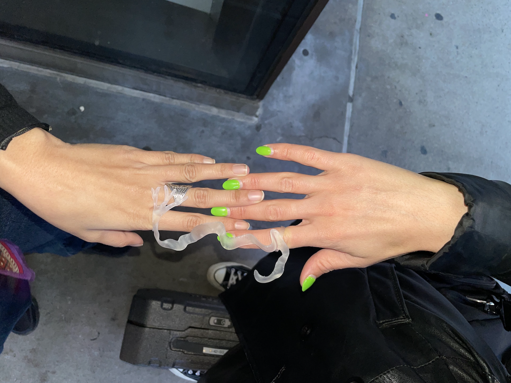

We go to the cottage a lot in the summertime and in the winter it’s too cold and the lake is frozen, but my uncle goes anyways on his Ski-Doo. You swim in it every day in the summer, and you wash your hair in it. But you have to have a special shampoo that’s biodegradable that doesn’t hurt the lake. The lake is called the Muskoka lake.
Selin
Since I’ve been born, I’ve been living in my grandma’s house and my grandma’s house has this amazing view of the Bosphorus. It’s breath-taking. It’s so cool in the morning when you wake up there’s a fog on the river and the sun rises over it, the way it casts. And there’s also dolphins in the river. The Bosphorus is what separates Turkey from Europe and Asia. In the old days, my grandparents’ days the river would freeze, and they would skate on it to get over it from the Asian side.
Dawn
In Korea there’s this island called Jeju Island. It’s a pretty popular tourist attraction. I went there with my friends to have fun but instead we fought. It was a little petty. It was just about money, I think. We had to split money and somehow while splitting one of the costs—something about that. I was annoyed at her tone so I was offended and she was annoyed with me because whenever we had to go somewhere it was always her who would look up the map and find how to go there. So, she was just annoyed at me for not helping her find directions. That was my bad. So anyways, we fought and then went to the ocean. And the ocean was like—it was so cold that day and the ocean perfectly encapsulated our relationship that day. It was just so stormy. The waves were splashing around and it was so windy.
Tessa
Well, I grew up in between two rivers. On the one side is the Columbia River. Which is a really big river, and it divides Oregon from Washington. It’s a huge gorge and there’s mountains on either side. And on the other side of my house is the Sandy River, which is a much smaller river. We swim in that one all the time. Because the Columbia River gorge is so big and there’s mountains on either side, there’s lots of waterfalls and smaller rivers that go into it too so there’s a lot of moving water all around where I grew up. And we’re pretty close to the coast too.
MacLean
My summer house is on an island in the middle of a river in upstate New York and it’s on the border of Canada and the U.S. So, it used to be a Canadian island and the U.S. took it, but I’m closer to Canada—I can literally swim to Canada. The service on my phone is even Canadian when I’m there. For COVID, you’re not supposed to touch the Canadian islands at all but there’s one that’s so close that I literally swim to it, I kayak to it all the time. And I like going there because there’s a cliff to jump. And you’re not supposed to it. But I do it anyways. My family’s been going there for a century. My grandfather’s father started taking them there when they were kids, so there’s a lot of old family homes. There’s a ton of cousins—cousins I’ve never even met before.

Gaia
When you start the trek, from the beginning you have a river following you to your right. At some point, when we got really high, there was just this lake which is called Annapurna lake and that was when you see the mountains with the snow. This is so nice, being next to the water (about the Hudson River). Something I like about Tel Aviv is that I’m always next to the water—I have the sea. When you have water next to you, it really gives you that energy. When you’re in the city city, in Manhattan, when you have no source of water, it’s weird.

Emma
I’m from Fresno in the middle of the state of California. We’re three hours away from anything. It’s very agricultural. Growing up, we’d go to this one lake that was towards the direction of the Sequoia National Park which is the closest landmark to me. We had lots of good memories there. I remember that all the water would go away in the winter, so you’d see all the rocks and it was really pretty and we’d jump around on all the island rocks and there was also this Candy shop next to it called Reimers and we’d go there and get candy and eat ice cream. I guess when we were little that’s why we’d call it Candy Island. And in the summer, it gets a lot of water, even the parking lot gets covered with water and you’d have to park on the street because all the snow from the Sierra Nevada’s melting and flowing down into the river. That’s also pretty fun because you can go swimming and jet skiing.
Joey
We would take a road trip to Utah every winter to go visit my grandparents. When we’d get about halfway, we’d go through a town called Rawlins, Wyoming, and there was a river called—I think— it’s the Green River. We never went into it or played in it or anything, it was just always there.
Prerana
The Dehli Public School in Hyderabad where I grew up, we used to have groups—like houses: Ganga, Kaveri, Narmada—and I was Narmada’s captain. I don’t know why they chose rivers. Hyderabad is in a state where the summers are terrible. Super dry. My family is super religious, and we tend to take trips to temples and they’re always on riverbanks. My memories of rivers have always been, oh it’s dry. The only thing that comes to my memories are rocks. I always wished I lived near a water body. Bangalore and Hyderabad are both as far away from the sea as possible. This year for my birthday in March, I ended up spending it in a city by the sea, Pondicherry, in South India. My friend and I were in an Airbnb right on the beach. It was a fisherman’s beach. I was just sitting on the beach on a full moon. Just being by the water on a day that felt important had me really appreciate it. I haven’t had the chance to swim in the ocean—it was the first time I did that, at 27. That was amazing.
Yusra
When it comes to rivers, I think of the biggest river in Lebanon called the Litani River, and it is so polluted. So polluted. There are toxic dumps from the factories and there’s the wastewater, there’s general neglect. And this is the river that feeds the agricultural areas, so farmers end up having polluted water to water their farms. And it’s very disappointing because the Litani was also a river that was a source of pride and the Israelis wanted to occupy everything from the Litani south, so it was also a river of conquest in a way—a marker for where the occupation would start because again, the water is sacred, the water is a resource for what we need to sustain ourselves as a civilisation.
Ashok
I think it was 2018 when I was the principal investigator of a multiyear project called Kailash sacred landscape and we had a team of around 30 scholars from different parts of the world and we visited Kailash, one of the holiest mountains. It’s located on the Tibetan side right at the corner of Nepal and India. We went further inside the region and camped right next to the Sutlej River, where it originates from. As a kid growing up in northern india, I’d heard about these rivers but the original starting point of the Sutlej—I remember, I’ll never forget was a site that was neither a stream nor a full river. It already had a particular flow and sound to it with the wind blowing. I remember that it was almost like a monk chanting in the background. I remember when we woke up the next day everyone said they had one of the best sleeps because there was something special of the proximity to the river.
Federica
When I was little, I used to go to the mountains with my grandparents and we’d have picnics close to the rivers and lakes. Me and my sister would enjoy putting our feet in the frozen water in the summer. I remember it was so clean and transparent because we were so close to where the water comes out.
Emely
It was something that would happen for example, during Semana Santa, the holy week—it’s like Easter, or spring break. We’d go to the beach and people would drink a lot of alcohol. It was definitely fun. We’d go with my aunties and cousins and all. The adults would stay on the sand for a while and me and my brothers and sisters and cousins would go into the water. We’d seek for rocks and seashells. Seashells were, at least on the beach I went to regularly, harder to find. They were all broken and non-existent so it was easier to find rocks.
Emma
I lived in Newport beach over quarantine and the only person I spent quality time with was my mother. Her and I lived together for approximately three months and all the beaches in California were closed but there were two private beaches in my neighbourhood that we had access to and could swim in. And I remember during that month the beach became a commodity and no longer a place that was on equal footing for everyone. And I remember posting on my story a picture of me sitting, smoking a cigarette at the beach and someone said, ‘I really wish I could be at the beach.’ And ever since that day, I will never take for granted, the beach.